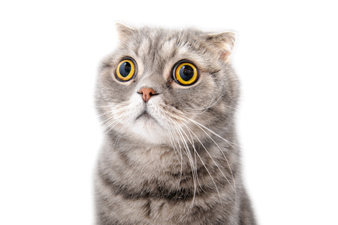

Le Chat domestique (Felis silvestris catus) est la sous-espèce issue
de la domestication du Chat sauvage, mammifère carnivore de la famille
des Félidés. Il est l’un des principaux animaux de compagnie et compte
aujourd’hui une cinquantaine de races différentes reconnues par les
instances de certification. Dans de très nombreux pays, le chat entre
dans le cadre de la législation sur les carnivores domestiques à
l’instar du chien et du furet. Essentiellement territorial, le chat
est un prédateur de petites proies comme les rongeurs ou les oiseaux.
Les chats ont diverses vocalisations dont les ronronnements, les
miaulements, les feulements ou les grognements, bien qu’ils
communiquent principalement par des positions faciales et corporelles
et des phéromones.
Le chat domestique mâle est couramment appelé un « chat » tandis que
la femelle est appelée « chatte »[2] et le jeune un « chaton
»[3],[4],[5]. Le mot chat vient du bas latin cattus, qui, d’après le
Littré (édition de 1878), provient du verbe cattare, qui signifie
guetter, ce félin étant alors considéré comme un chasseur qui guette
sa proie. Cette interprétation porte cependant à controverse, au vu
des termes utilisés dans certaines langues afro-asiatiques (berbère
kadiska)[6] ou nilo-sahariennes (nubien kadis)[6]. En latin classique,
« chat » se dit felis (d’où, en français, félin, félidés, etc.), mais
désigne uniquement le chat sauvage d’Europe, tandis que cattus
s’applique au chat domestique[7]. On désigne aussi plus familièrement
le chat par minet ou minou et la chatte par minette. Ce terme, attesté
dès 1560, provient de mine, nom populaire du chat en gallo-roman. Ce
mot est à l’origine de l’expression dès potron-minet, qui signifie «
de bon matin ». D’après le Littré, il s’agirait d’une déformation de
paître au minet, c’est-à-dire du moment où le chat, qui se lève tôt,
va chercher son paître : sa pâture, sa nourriture… Cette explication
doit sans doute à la pudeur de cet auteur du XIXe siècle : selon
Claude Duneton[8], cette expression provient de poitron-jacquet,
jacquet désignant un écureuil (animal matinal marchant la queue levée)
et poitron désignant le postérieur. Dès potron-minet signifie donc : «
à l’heure où l’on voit le derrière du chat ». Quant au « minet » ou à
la « minette » qui « fait des mines », lorsque ce terme est appliqué à
l’être humain, c’est un jeune homme ou une jeune fille qui s’efforce
de plaire et se préoccupe beaucoup de son apparence[A 1]. Un chat mâle
non castré est un « matou », terme à l’origine incertaine qui
viendrait peut-être d’une dérivation de mite comme dans chattemite[9].
Le chat est aussi nommé familièrement « mistigri », mot-valise composé
du préfixe miste, signifiant adroit, et de gris, la couleur[10]. En
argot, un chat s’appelle un « greffier »[11],[12],[13]. Deux
explications s’opposent, qui peut-être n’en font qu’une : d’une part,
le jeu de mots sur griffe est évident ; d’autre part, la fourrure de
certains chats noirs comporte une sorte de plastron blanc sur le
poitrail, et celui-ci évoque le rabat blanc que l’on voit sur la robe
noire des greffiers à l'audience[A 2]. Anatomie Squelette et muscles
gravure ancienne montrant un chat et en dessous une coupe montrant le
squelette Chat. Vue externe et squelette. Le squelette est composé de
250 os. Les vertèbres du cou sont courtes, et la colonne vertébrale
est très souple. La clavicule des chats, de petite taille comme pour
tous les félins, est reliée au sternum par un unique ligament : cela
lui confère une grande souplesse, les épaules pouvant bouger
indépendamment l’une de l’autre. Comme tous les carnivores, la
dernière prémolaire supérieure et la première molaire inférieure
forment les carnassières qui permettent au chat de déchirer sa
nourriture, grâce à des muscles puissants fixés aux parois latérales
de son crâne, et de l’avaler sans la mâcher. L’os hyoïde est
entièrement ossifié, ce qui permet au chat de ronronner mais pas de
rugir[14]. Les pattes sont pourvues de griffes rétractiles. Le chat
possède cinq doigts aux pattes antérieures, dont seulement quatre
touchent le sol, le pouce restant à l’écart, ainsi que quatre doigts
aux pattes postérieures[14]. Des cas de polydactylie existent et
certains standards de races de chats l’admettent dans les concours[A
3]. Les coussinets ou pelotes, sont constitués d’une membrane
élastique qui confère une marche silencieuse[15]. Ces spécificités
confèrent à l’animal une grande souplesse et une détente ample lors
des sauts : il peut notamment sauter à une hauteur cinq fois
supérieure à sa taille[16]. À la course, sa vitesse moyenne est de 40
km/h et il met 9 secondes pour faire 100 m, mais il n’est pas un
coureur de fond et il se fatigue assez vite[16]. Contrairement à ce
que l’on peut penser, tous les chats savent très bien nager et ils
n’hésiteront pas à se jeter à l’eau s’ils y sont contraints[17]. Un
chat pèse en moyenne entre 2,5 et 4,5 kg et mesure de 46 à 51 cm sans
la queue, qui peut, elle mesurer de 20 à 25 cm de long. Le record de
poids et de taille est détenu par Himmy, un chat castré australien
qui, à sa mort en 1986, pesait 21,3 kg pour 96,5 cm de longueur totale
et un tour de taille de 84 cm[18]. Coussinet d'un chat. Griffe avec le
nerf visible. Cliquez sur une vignette pour l’agrandir. Système
digestif Anatomie des organes vitaux du chat. Le chat mastique peu et
le processus de digestion commence directement dans l’estomac de
petite taille (environ 300 millilitres) mais qui possède un pH très
acide qui est également utile comme moyen de prévention des infections
digestives[19]. Son intestin est plutôt court (environ un mètre pour
l’intestin grêle et de 20 à 40 centimètres pour le gros intestin),
typique du chasseur de petites proies. Ces dimensions expliquent
pourquoi le chat doit manger fréquemment mais en petites quantités
(entre 10 et 16 repas journaliers)[20]. Le système digestif du chat
est également peu adapté à la diversité alimentaire, qui lui vaut
généralement des diarrhées et vomissements. Enfin, le transit digestif
du chat est rapide, entre 12 et 14 heures[19]. Pelage Les types de
pelages sont nombreux, car très variables en fonction des races. Le
pelage du chat est composé de poils longs (jarre) et portant les
marques de la robe (taches par exemple). En dessous se trouvent les
poils plus courts (bourre), puis le duvet. Cette organisation permet
une bonne isolation du corps. Il existe des poils longs, courts,
frisés, et même crépus. Certaines races, comme le sphynx, sont presque
dépourvues de poils : un très léger duvet recouvre le corps, ainsi que
la queue[16]. La robe d’un chat est composée d’une ou plusieurs
couleurs qui forment diverses combinaisons (les motifs) appelés
patrons : certains individus présentent de larges taches, d’autres des
rayures ou des mouchetures, d’autres encore un pelage uni[16]. La robe
peut aussi avoir une pigmentation plus foncée vers les extrémités du
corps (robes colourpoint, mink et sépia). L’alliance des différentes
couleurs et des patrons donnent toutes les variations de fourrure
possibles pour un chat. La couleur de la fourrure du chat peut prendre
de nombreuses teintes (noir, blanc, bleu, roux…), plus ou moins
diluées ou foncées. Les mâles pour des raisons génétiques ne peuvent
avoir qu’une seule ou deux couleurs à la fois (sauf exceptions) ;
seules en principe les femelles peuvent en comporter trois : ce sont
les robes écaille de tortue et calico[21]. Un effet désigne une teinte
aux reflets changeants due à la variation de clair et de foncé sur la
longueur du poil (robes chinchilla, shaded, smoke ou cameo). Sens
Prédateur crépusculaire (coucher et lever du soleil) à l’origine, le
chat possède des sens très développés. Il perçoit son univers
différemment des humains, et on lui a même prêté des pouvoirs
surnaturels. Il existe ainsi de nombreuses légendes de chats ayant
prédit des tremblements de terre ou autres catastrophes. L’explication
la plus probable est que ses vibrisses et ses oreilles sont aptes à
percevoir des vibrations indécelables pour les humains[16]. Ouïe De 60
à 80 % des chats blancs aux yeux bleus sont sourds[22]. Son ouïe est
particulièrement sensible dans les hautes fréquences : il perçoit des
ultrasons jusqu’à 50 000 Hz alors que l’oreille humaine est limitée à
20 000 Hz[23]. Son pavillon en cornet peut être orienté grâce à
vingt-sept muscles, ce qui lui permet de pivoter chaque oreille
indépendamment pour localiser avec précision la source d’un bruit et
sa distance[16]. La surdité des chats blancs est liée au gène « W »,
qui est responsable de l’absence de pigment dans le poil, qui paraît
blanc. Il est en effet démontré que l’allèle W est directement
responsable d’une dégénérescence de l’oreille interne, occasionnant la
surdité. La surdité ne s’exprime pas systématiquement chez tous les
chats : elle peut être la surdité bilatérale, unilatérale ou absente.
Le chaton naît normal mais vers l’âge d’une semaine, son oreille
interne, au lieu de continuer à se développer subit des altérations
progressives. La dégénérescence est généralement complète à trois
semaines[22]. Vue Gros plan sur l’œil d’un chat. Le tapetum lucidum
des yeux du chat réfléchit la lumière. La vue est son sens primordial.
Son champ de vision est plus étendu que celui des humains : l’angle de
vision binoculaire est de 130°, pour un champ de vision total de 287°,
contre seulement 180° chez l’homme[24], ce qui reste cependant loin du
record absolu du monde animal. Le chat est nyctalope, l’intensité
lumineuse influence la forme de sa pupille : allongée en fente étroite
en pleine lumière, elle se dilate en un cercle parfait à la pénombre.
Contrairement à une idée répandue, il est incapable de voir dans le
noir complet. Il est toutefois beaucoup plus performant que l’œil
humain dans la pénombre. La nuit, l’aspect brillant des yeux est dû à
une couche de cellules de la rétine, appelée tapetum lucidum, qui agit
comme un miroir et renvoie la lumière perçue, ce qui la fait passer
une seconde fois dans la rétine et multiplie son acuité visuelle dans
l’obscurité[16]. En revanche, il semblerait (cela est encore discuté)
que le chat ne perçoive pas la couleur rouge et que, d’une manière
générale, il distingue très mal les détails. Sa vision est granuleuse
sur les images fixes tandis qu’un objet en mouvement lui apparaît plus
net (par exemple, une proie en mouvement)[16]. Une particularité de
l’œil du chat est qu’outre les paupières inférieure et supérieure, il
est protégé par une troisième paupière, la membrane nictitante.
Celle-ci se ferme à partir du bord inférieur du coin interne de l’œil
vers l’extérieur. Quand elle ne se referme pas complètement, c’est
souvent le signe d’un problème de santé chez le chat[16]. Les chats
peuvent avoir les yeux de différentes couleurs : bleu, vert, jaune,
marron… Odorat Gros plan sur le nez d'un chat. L’odorat a une grande
importance dans la vie sociale du félin pour délimiter son territoire.
Par ailleurs, c’est son odorat développé qui lui permet de détecter la
nourriture avariée et empoisonnée. Il possède deux cent millions de
terminaux olfactifs, contre cinq millions pour l’homme[25]. Ce sens
est de 50 à 70 fois mieux développé que chez l’homme. Goût Le sens du
goût est développé chez le chat, moins que chez l’homme cependant :
chez le chat adulte, on compte 250 papilles comptant 2 000 bourgeons
gustatifs[26]. Contrairement au chien, le sens gustatif du chat est
localisé à l’extrémité de la langue, ce qui lui permet de goûter sans
avaler. Il est sensible à l’amer, à l’acide et au salé, mais non au
sucré[16]. Toucher Son sens du toucher est également bien développé.
Ses vibrisses (longs poils présents sur les moustaches, sur les
pattes, sous le menton, les sourcils) lui indiquent la proximité
d’obstacles, même dans l’obscurité totale, en lui permettant de
détecter les variations de pression de l’air. Celles-ci lui permettent
aussi de mesurer la largeur d’un passage. Il ne faut surtout pas les
couper car le chat serait déstabilisé[27]. Les coussinets garnissant
ses pattes sont très sensibles aux vibrations et sa peau est
constellée de cellules tactiles extrêmement sensibles[16]. Vue
générale des vibrisses faciales d'un chat Autres sens Organe de
Jacobson L’organe de Jacobson est un véritable sixième sens. Comme le
chien ou le cheval, le chat est capable de goûter les odeurs à l’aide
de son organe voméro-nasal. Il retrousse ses babines pour permettre
aux odeurs de remonter par deux petits conduits situés derrière les
incisives jusqu’à deux sacs remplis de fluide dans les cavités nasales
chargées de concentrer les odeurs[16]. Cette attitude caractéristique,
commune à plusieurs mammifères, est aussi appelée « réaction de
Flehmen ». Organe vestibulaire Son organe vestibulaire est également
particulièrement développé, lui conférant un bon sens de l’équilibre.
Ceci explique l’étonnante faculté qu’ont les chats de se retourner
rapidement pour retomber sur leurs pattes lors d’une chute[16]. Si un
chat fait une chute de deux mètres et plus (si tel n’est pas le cas,
sa technique ne marche pas) alors qu’il est sur le dos, il peut se
retourner afin d’amortir cette chute. En effet, il tourne d’abord sa
tête en direction du sol, entraînant les pattes avant puis les pattes
arrière[28]. Le chat se retrouve alors le ventre en direction du sol
et prend une position qui ressemble à celle d’un écureuil volant. Il
ne lui reste qu’à courber le dos et dès qu’il se rapproche du sol, il
rassemble ses pattes, comme s’il était sur terre. Cependant cela ne le
sauve pas forcément mais rend juste la chute moins grave[29].
Différentes races Les caractéristiques essentiellement de morphologie
et de couleur conservées entre générations de chats servent
usuellement à définir des races, dont la pureté repose sur la
constance et la concordance avec des standards. Rappelons que cette
notion de race a d’abord un but descriptif de catégorisation
arbitraire, plutôt qu’une consistance biologique forte (seule l’espèce
montre une homogénéité dont, pour certains critères, anatomiques,
génétiques… la variance est parfois moindre que dans la population
d’une race). Les races restent interfécondes. La consanguinité produit
fréquemment des tares. Par exemple, la surdité est fréquente sur les
chatons croisés de chats blancs. En France, un chat de race est un
chat ayant un pedigree[30]. Les registres d’immatriculation des
spécimens sont maintenus par différentes associations comme les
américaines TICA, l’ACFA et le CFA, la française LOOF, deux
fédérations internationales, la FIFé et la WCF ou encore la GCCF
britannique. Ces associations permettent l’inscription des spécimens
sur des critères d’origines génétiques stricts. Ainsi tout animal dont
les géniteurs ne sont pas inscrits est écarté. Ces inscriptions sont
payantes. Les chats de race sont une minorité et ne représentent selon
l’AFIRAC que 5 % de la population totale des chats[31]. Tous les
autres chats domestiques, ceux ne possédant pas de pedigree, sont
considérés comme chats de gouttière, appelés également chats de
maison. Le nombre de races reconnues varie du simple au double selon
ces organisations[A 4]. Certaines sont très anciennes, comme le
siamois ou l’angora turc, d’autres ont été créées plus récemment,
comme le ragdoll ou le peterbald. L’homme a également procédé à des
hybridations entre chats domestiques et petits félins, ce qui a donné
naissance à des races telles que le bengal. Comportements Le chat est
généralement d’une nature très indépendante, mais cela peut varier
selon les races et la façon dont le chat a été élevé. Contrairement au
chien, il se promène seul. C’est un animal rituel qui apprécie bien
les situations récurrentes (heures fixes pour les repas par exemple).
Bien que territorial, c’est un animal sociable. Bon nombre de chats
harets vivent en groupe. Le chat est un animal territorial. Cela
signifie que la préservation de son lieu de vie est le moteur
principal de ses interactions avec les autres individus. Lorsque
plusieurs chats partagent le même appartement, il n’est pas rare de
les voir choisir chacun son propre « chemin » pour aller d’un lieu à
un autre ; ils se partagent ainsi leur territoire. Le chat n’est pas
un animal strictement solitaire : selon l’espace et les ressources
disponibles, les chats forment différentes structures spatiales et
sociales. Cela va des chats solitaires en milieu rural aux larges et
denses groupes en milieu urbain. Il est démontré que ces différentes
organisations spatiales et sociales entraînent différents systèmes
d’appariement[32] : en milieu rural, le système est polygyne, tandis
qu’en milieu urbain, il est difficile pour les mâles dominants de
monopoliser plusieurs femelles. Communication Les chats communiquent
principalement entre eux par des phéromones ou des positions
corporelles. Les glandes contenant les phéromones se trouvent en de
nombreux points sur le corps : glandes anales, autour de la queue et
de la bouche, sur les joues, entre les coussinets et se déposent
également dans la salive, les selles et l’urine. Elles ont l’avantage
de pouvoir durer dans le temps, même en l’absence du chat,
contrairement aux vocalises ou aux positions corporelles. Elles
peuvent être déposées de manière volontaire (marquage du territoire,
contacts sociaux comme l’allotoilettage…) ou involontairement (stress,
attachement de la mère à ses chatons, phéromones sexuelles)[33]. Le
chat utilise également une large gamme de positions corporelles pour
communiquer. La position générale du corps, ses mimiques faciales ou
les mouvements de sa queue, de ses yeux et de ses oreilles indiquent
l’état dans lequel se trouve le chat[33]. En dehors de la relation
entre une chatte et ses petits, le miaulement est très peu utilisé
lorsque des chats communiquent entre eux. Par contre, au contact de
l’humain, il continue souvent à utiliser différentes vocalises pour
communiquer[33]. Chat soumis à un autre. Chat se hérissant et courbant
le dos. Groupe de chats se partageant des ordures devant les remparts
de Rhodes. Cliquez sur une vignette pour l’agrandir. Miaulement
Vocalisations Miaulement d’un chat Ronronnement d’un chat Des
difficultés à utiliser ces médias ? Des difficultés à utiliser ces
médias ? modifier Consultez la documentation du modèle Le miaulement
est un cri caractéristique du chat[A 5]. En général, le chat est d’un
tempérament plutôt discret, mais certaines races, notamment les
siamois, sont plus « bavardes » que d’autres. Le chat crie souvent et
fortement quand il cherche un compagnon ou une compagne. Certains
disent alors qu’il « margotte », au sens figuré[A 6]. Les miaulements
sont poussés tout d’abord par la femelle au début de l’œstrus, puis
pendant toute la période d’accouplement, par le mâle et la femelle,
avec de nombreuses variations possibles[34]. Plus rarement, le chat
émet un miaulement saccadé d’intensité faible lors d’une frustration,
comme lorsqu’il voit une proie hors de portée tel un oiseau ou un
insecte volant. Ce miaulement est souvent accompagné de claquement des
mâchoires, parfois accompagné de vifs mouvements de queue, que l’on
pourrait comparer à notre expression avoir « l’eau à la bouche »[33].
En présence de l’humain, le chat très imprégné utilise souvent un
registre spécifique, qui varie selon l’individu et qui semble en
grande partie acquis. Selon le chercheur John Bradshaw, le chat peut
utiliser une dizaine de vocalises selon les circonstances et sa
situation. Ainsi, il peut accueillir son maître avec des petits
miaulements brefs en rafales (comme s’il « aboyait »), saluer les
passants, demander une action spécifique (le brossage, par exemple),
signaler qu’il a faim, ou mal[35],[36],[A 7]. D'une façon générale les
chats ne communiquent que très rarement entre eux en miaulant. En fait
ils utilisent le miaulement par rapport aux hommes, pour attirer leur
attention. Grognement Le chat, en position d’attaque ou de défense,
est aussi capable de grogner et de souffler. Le terme de feulement est
également utilisé dans le sens de grondement. Par exemple, de nombreux
grognements et sifflements — en plus des miaulements — sont émis par
les mâles qui s’affrontent pour la femelle lors des périodes de
reproduction[34]. Ronronnement Produit à l’expiration comme à
l’inspiration, le ronronnement est un son de basse fréquence. Le
mécanisme du ronronnement est encore mal expliqué. La théorie
dominante est que le son est produit par des contractions des muscles
du larynx[37] déclenchées par une oscillation neurale et faisant
vibrer les cordes vocales[38],[37]. Le ronronnement est
essentiellement limité aux relations mère-progéniture dans la nature.
Le ronronnement apparaît dès l’âge de deux jours lors de la tétée, où
chatte et chatons communiquent par ronronnement ; ce phénomène
apparaît aussi lors de la toilette des chatons par la mère[25]. Le
ronronnement se manifeste le plus souvent lorsque l’animal éprouve du
plaisir mais aussi de la souffrance : stressé, blessé et même en
mourant, le chat peut ronronner ; il s’agit donc de l’expression d’un
sentiment fort. Enfin, le ronronnement sert aussi à communiquer,
puisque la rencontre de deux chats déclenche des ronronnements[39] Le
chat ronronne le plus souvent pour exprimer la dépendance
affective[25] : le chaton dépend de sa mère et de son lait, de l’homme
lorsqu’il réclame des soins ou des caresses. Comparé au sourire par
certains auteurs[40], son rôle social, tant avec des congénères
qu’avec l’être humain, est primordial. Une théorie assure au
ronronnement un rôle curatif : les basses fréquences émises
permettraient de renforcer les os, les muscles, les tendons et
auraient même un rôle anti-douleur[41]. En effet, une hypothèse avance
que le ronronnement, dont la fréquence se situe entre 25 et 30 Hz,
peut avoir un pouvoir réparateur et même antalgique par rapport aux
os, aux tendons et aux muscles. Le ronronnement aurait un effet
bénéfique sur les humains, notamment grâce à un effet relaxant[41],
qui a été popularisé dans la presse par le terme « ronron-thérapie
»[42]. Sommeil Chat dormant en plein jour (animation). Le chat a
besoin d’entre 12 et 16 heures de sommeil quotidien mais, en général,
il dort plus, soit en moyenne 15 à 18 heures par jour. Il reste ainsi
éveillé environ 6 à 9 heures dont une partie de la nuit pour chasser.
Le chat est un animal avec une grande proportion de phases de sommeil
paradoxal dont une partie correspond à des rêves : la durée
quotidienne de cette phase dure de 180 à 200 minutes chez le chat,
contre environ 100 minutes pour l’Homme[43]. C’est pour cette raison
que le chat est fréquemment utilisé dans le cadre d’expérimentations
sur les cycles du sommeil. Durant les phases de sommeil paradoxal,
l’activité électrique du cerveau est semblable à celle de l'éveil. Par
contre, cette phase de sommeil se caractérise par une atonie
musculaire, causée par une inhibition des centres moteurs, structures
cérébrales contrôlant le mouvement[44]. On observe néanmoins
d'importants mouvements oculaires, caractéristiques de cette phase.
Quelques mouvements tels que l’agitation des vibrisses, des sursauts
des pattes ou de la queue, le hérissement du pelage sont aussi
observables mais beaucoup plus anecdotiques[45]. Il est à noter que
ces phases de sommeil paradoxal sont très importantes chez le chat :
cela lui permet de garder un équilibre au niveau mental[46]. Ce
sommeil paradoxal peut voir son temps augmenté par des repas
échelonnés au cours de la journée. Durant ce sommeil paradoxal, le
tracé de son encéphalogramme est analogue à celui de l’éveil malgré
une totale perte de conscience : le système nerveux fonctionne
probablement à vide, soit pour sélectionner et mettre en mémoire les
événements de la journée, soit pour évoquer le souvenir des
perceptions passées, d’où l’hypothèse que le sommeil paradoxal est un
témoin de l’activité onirique[46]. Griffades Chatte griffant une
branche d’arbre pour marquer son territoire. La pousse des griffes du
chat est continue et compense leur usure naturelle. Le chat peut
ajuster la longueur de ses griffes et les aiguiser en les frottant
contre une surface rugueuse : il « fait ses griffes ». Les griffades
sont des marquages visuels et olfactifs. Ce comportement est un outil
de communication. Le chat possède entre les coussinets des glandes
sudoripares émettrices de phéromones qui servent à signaler son
passage aux autres chats. En outre, les traces de griffades sont un
marquage visuel, pour signaler la présence d’un chat sur le
territoire. L’onyxectomie est parfois pratiquée par les propriétaires
: elle consiste en l’ablation totale de la griffe et l’amputation de
la troisième phalange sur laquelle celle-ci est insérée. Le plus
souvent, elle n’est réalisée que sur les pattes antérieures. La
plupart des associations de défense des animaux condamnent cette
opération, considérée comme cruelle[47]. L’animal privé de ses
griffes, incapable de se défendre ou de grimper aux arbres, devient
également plus vulnérable puisqu’il ne peut échapper à ses prédateurs.
L’ablation des griffes est couramment pratiquée aux États-Unis et au
Canada. Cette opération est en revanche interdite dans 29 pays,
principalement européens[48]. D’autres techniques de dégriffage, moins
douloureuses pour le chat, existent, comme la tendinectomie ou la
brûlure des nerfs au laser. Toilette Lors de leur toilette (un quart
de leur journée est consacrée à cette activité alors que le chat dort
en moyenne 14 heures par jour[49]), ils avalent de nombreux poils
morts qui s’accumulent dans l’estomac, formant des boules de poils,
appelées trichobézoards. Cela perturbe leur transit intestinal et ils
sont obligés de les régurgiter afin d’éviter une occlusion
intestinale. Leur salive contient l’allergène qui provoque l’allergie
aux poils de chat. C’est donc lors de sa toilette que le chat le
dépose sur ses poils. La langue des chats contient en moyenne 300
petites papilles cornées mesurant 2,3 mm. Elles sont creuses, ce qui
assure la remontée de la salive par capillarité et leur permet de
mouiller la base des poils de leur fourrure[49]. L’« allotoilettage »
(action de se lécher mutuellement) est réservé aux chats qui se
connaissent et s’apprécient. Ils se lèchent pour échanger leur odeur
et déposent sur l’autre des phéromones apaisantes[33]. Quand ils
s’entendent bien, les chats adultes dorment volontiers ensemble,
serrés l’un contre l’autre comme lorsqu’ils étaient chatons. Un moyen
de se procurer mutuellement chaleur et sécurité. En dormant ensemble,
les chats échangent aussi leur odeur. Lapement Vidéo d’un chat lapant
l’eau d’une flaque. Le chat, à l’instar des félidés, a une technique
de lapement différente des autres animaux. On pensait que les papilles
cornifiées de sa langue lui servaient à retenir l’eau mais il en est
tout autrement. Alors que l’homme boit par la technique de succion et
que le chien, comme beaucoup d’autres vertébrés, plonge le museau et
plie sa langue comme une cuillère, ce qui amène le liquide vers sa
gueule, le chat plie la pointe de la langue vers le bas et vers sa
face dorsale pour effleurer le liquide, puis la retire aussitôt, ce
qui crée une colonne de liquide. Le chat, au moment où la gravité
reprend le pas sur la force d’inertie et va faire retomber la colonne,
referme sa mâchoire et aspire alors une partie de cette colonne[50].
Cette technique de lapement (en moyenne 4 lapées par seconde pour le
chat, moins pour les félidés plus gros[A 8]) a été modélisée
mathématiquement et reproduite par un robot (disque de verre rond
remontant par un piston à la même vitesse que la langue féline, soit 1
m/s[51]). Une hypothèse expliquant cette technique sophistiquée met en
cause la région extrêmement sensible du nez et des moustaches du chat,
ce dernier lapant en cherchant à maintenir cette région la plus sèche
possible[52]. Déjections Crottes fraîches de chat. Les chats, dans la
nature, choisissent un coin de terre meuble pour y laisser leurs
déjections. Ils les recouvrent ensuite de terre, en grattant cette
dernière avec leurs pattes avant. L’odeur des selles déclenche le
recouvrement ; cela permettait à l’état sauvage de ne pas faire
repérer leurs odeurs par les prédateurs et de diminuer les risques
d’infections parasitaires[53]. Elle est inculquée très tôt par la mère
aux chatons, ce qui laisse à penser qu'elle n'est pas instinctive.
Toutefois, les personnes[Qui ?] ayant eu à s’occuper de chatons
orphelins ont l'heureuse surprise de voir ce comportement émerger de
lui-même, pour autant que de la terre meuble soit disponible. Le chat
défèque une à deux fois par jour[53] et urine jusqu’à cinq fois par
jour[54]. Il ne faut pas confondre le marquage urinaire, c’est-à-dire
l’opération de marquage du territoire qui est un comportement, et la
miction, où le chat « se soulage »[54] : dans le premier cas, le chat
est debout, la queue levée et dos à l’élément qu’il compte marquer,
dans le second cas, il adopte une position analogue à celle de la
défécation. La défécation enfouie ne constitue probablement pas un
signe du marquage du territoire chez le chat, au contraire des
déjections situées bien en vue sur des lieux de passage des chats (en
hauteur, par exemple sur une souche)[53]. Avec le vieillissement de
l’animal, le volume d’urine peut croître à cause de fréquents
problèmes bénins d’hyperthyroïdie[55]. Chasse Comportement en chasse
Le chat est essentiellement carnivore. Son métabolisme a besoin de
taurine présente dans la viande, qui est un dérivé d’acide aminé qu’il
ne peut synthétiser en quantité suffisante. Une carence en taurine
entraîne chez le chat des troubles oculaires, cardiaques, des déficits
immunitaires et des problèmes de reproduction chez les femelles[56].
Deux stratégies de chasse peuvent être distinguées[57] : la stratégie
mobile (ou chasse à l’approche), comportant une phase d’approche de la
proie, suivie d’une phase d’attaque et la stratégie stationnaire (ou
chasse à l’affût), qui comporte une phase attentive et immobile,
suivie d’une phase d’attaque. Les méthodes de chasse utilisées ne
semblent pas spécifiques à l’espèce chassée. Pour tuer sa proie, le
chat mord généralement à la nuque, en brisant ainsi la colonne
vertébrale[57]. Les proies les plus courantes sont de petits rongeurs
mais ils s’attaquent aussi aux lézards, aux petits oiseaux, aux
insectes, aux lapereaux et parfois à des proies moins conventionnelles
comme la grenouille, le hérisson ou l’écureuil. Opportuniste, le chat
ne rechigne pas à s’attaquer aux déchets[57]. La chasse peut
simplement se dérouler dans une optique de jeu. Chez le chaton, on
observe des jeux de chasse comme chez les autres félins, avec un rôle
social similaire. Approche. Chat ayant capturé un oiseau. Chat tenant
un rongeur dans sa gueule. Cliquez sur une vignette pour l’agrandir.
Impact sur l’environnement naturel L’instinct de prédateur du chat se
traduit par le fait que, même parfaitement « domestiqué », et bien
nourri, il ne renonce pas pour autant à tuer des proies autour de lui.
Populations domestiques Un certain nombre d’études ont été faites pour
mesurer l’impact de ce comportement, au Royaume-Uni et aux États-Unis
: une étude portant sur une année[58] menée à Wichita, Kansas, a
montré en 2000 que les chats de cette ville de 300 000 habitants
tuaient en moyenne 4,2 oiseaux par an chacun, malgré leur
environnement urbain. Une extrapolation aux 64 millions de chats que
comptaient alors les États-Unis conduirait au chiffre de 250 millions
d’oiseaux tués chaque année dans le pays par les chats ; en
Angleterre, Peter B. Churcher et John H. Lawton ont mené une étude
d’un an également sur 78 chats, dans un petit village du Bedfordshire.
Les résultats, extrapolés par eux en 1989 sur la base du nombre de
chats en Angleterre (de l’ordre de 5 millions lors de l’étude),
correspondaient à un nombre annuel de proies tuées de toutes espèces
de l’ordre de 70 millions, dont environ 35 % d’oiseaux (soit 24 à 25
millions d’oiseaux tués par an). Près de la moitié des oiseaux tués
étaient des hirondelles[59]. Rapporté au nombre de chats, le nombre
d’oiseaux tués par chat est compris entre 4,5 et 5 par an, donc
finalement très proche du chiffre trouvé dans l’étude américaine. Il a
été remarqué que le problème vient du fait que cette prédation n’est
pas naturelle, puisqu’elle dépend d’une population de chats
anormalement importante, car son nombre est défini par l’homme, et non
par les ressources naturelles[60]. Ceci se traduit en particulier par
le fait que le chat entre en concurrence avec les prédateurs naturels
de la région, dont la survie est ainsi rendue plus difficile. Mais il
a aussi été rappelé que ces populations domestiques de chats existent
depuis déjà des siècles, sans que les équilibres naturels en aient été
profondément affectés, ni qu’on puisse leur attribuer la disparition
de telle ou telle espèce d’oiseau. Le point crucial dépend donc de la
densité de population humaine elle-même, ainsi que l’augmentation du
nombre moyen de chats par foyer humain. L’étude menée par Peter B.
Churcher et John H. Lawton eux-mêmes, si sérieusement qu’elle ait été
conduite, porte sur un échantillonnage trop faible pour pouvoir être
extrapolée au niveau d’un pays tout entier[61]. Reste le fait que le
potentiel destructeur du chat domestique s’est révélé, lors de ces
études, être beaucoup plus important que ce que l’on pensait
jusqu’alors, s’agissant d’une population domestique sans réel besoin
de trouver sa nourriture par elle-même. Chats retournés à l’état
sauvage S’il existe des chats redevenus sauvages dans de nombreux
pays, c’est dans l’hémisphère sud, dans des pays comme l’Australie[62]
ou la Nouvelle-Zélande — où les chats n’ont jamais été une population
d’origine indigène — que ce problème présente le plus d’acuité. En
effet, ces terres abritent des espèces, telles que le kakapo,
particulièrement fragiles face à des carnivores mammifères
placentaires importés, tels que les dingos ou les chats redevenus
sauvages (« chat haret »). Ces chats ont eu des effets importants sur
ces espèces animales, et ont joué un rôle majeur dans les risques
d’extinction de plusieurs d’entre elles. En Australie, de nombreuses
espèces indigènes, des oiseaux, des lézards, de petits marsupiaux sont
chaque année la proie de chats harets. Les chats, introduits en
Australie au XVIIIe siècle par des colons britanniques, ont donné lieu
à l’apparition d’une population sauvage, en particulier au XIXe
siècle, où des chats domestiques ont été délibérément relâchés pour
lutter contre la prolifération de souris et de lapins. Cette
population redevenue sauvage est aujourd’hui très importante,
puisqu’elle a été évaluée en 2004 à 18 millions de chats[63]. Des
mesures d’éradication de ces chats, considérés comme invasifs, y sont
d’ailleurs régulièrement menées par le gouvernement australien[62],
sous le nom de Threat Abatement Plans (« Plans d’amoindrissement de la
menace » sur la biodiversité). Ces plans identifient les espèces
menacées par les chats (une trentaine d’espèces pour les seuls
oiseaux, par exemple), ainsi que les actions à mener et les moyens à
mettre en œuvre. Ils donnent lieu ensuite à une analyse des résultats
obtenus. Le problème écologique ainsi posé à l’Australie est
extrêmement complexe, puisque la totale extermination des chats harets
se traduirait aussitôt par la multiplication incontrôlée d’autres
espèces invasives importées, comme les lapins et les rats[63]. C’est
ce qui est arrivé par exemple dans l’île Macquarie, où l’éradication
du chat s’est traduite par une explosion désastreuse du nombre de
lapins[64]. En Nouvelle-Zélande, la menace est du même ordre, à la
fois dans son origine (population de chats domestiques relâchés au
XIXe siècle pour lutter contre la prolifération des lapins), et dans
ses conséquences sur les espèces locales. Les chats harets sont par
ailleurs soupçonnés de véhiculer la tuberculose, même s’il est loin
d’être prouvé qu’ils puissent transmettre la maladie à d’autres
espèces[65]. Il est permis en Nouvelle-Zélande de tirer sur les chats
soupçonnés d’être des chats harets, ce qui amène à garder enfermés
chez soi les chats domestiques lorsque des battues sont organisées.
Reproduction Maturité sexuelle Le développement des fonctions
reproductrices du chat mâle commence vers trois mois avec
l’augmentation de la production de testostérone. Vers six ou sept mois
des épines apparaissent sur le pénis du chat[33]. À cet âge, il peut
commencer à se reproduire et souvent, marque son territoire en
émettant des jets d’urine très odorants. La femelle devient pubère dès
son premier œstrus (communément appelé « chaleurs ») qui survient en
moyenne entre sept et dix mois[66]. Dès les premières chaleurs, qui
durent de un à cinq jours[66], la chatte est capable de se reproduire.
Elle connaît ensuite de nombreuses périodes de chaleurs, généralement
situées du printemps à l’automne. Il est possible qu’une chatte soit
de nouveau fécondée deux semaines après avoir mis bas[33].
Accouplement Lorsque les mâles sont à même de pouvoir s’accoupler avec
la femelle, encore faut-il que cette dernière les accepte. Lors de
l’accouplement, qui dure entre 5 et 15 secondes[33], le mâle monte sur
le dos de la femelle, ce qui accentue la courbure lombaire de sa
partenaire (réflexe de lordose), lui mord la peau du cou et piétine la
croupe pour améliorer la pénétration. Les petites épines présentes sur
le pénis du mâle orientées vers l’arrière raclent les parois du vagin
de la femelle. Cette stimulation du vagin est nécessaire pour
déclencher l’ovulation chez la chatte[67]. À chaque pénétration, la
chatte émettra un nouvel ovule, ce qui explique pourquoi les chatons
d’une même portée peuvent être de pères différents[68]. Des
hybridations sont possibles entre le chat domestique et le chat
forestier (à ne pas confondre avec les chats harets), chat sauvage
autochtone d'Europe[69],[70] protégé par la Convention de Berne et qui
n'a jamais été domestiqué. On s’attend à ce que ce phénomène soit de
plus en plus fréquent avec la fragmentation des forêts et une
pénétration plus forte des chats domestiques, et il pourrait être une
source de « pollution génétique[71] » et de propagation de zoonoses et
de virus[72] ou autres pathogènes et parasites félins[70]. Gestation
et mise bas Radiographie d'une chatte gravide (à environ 1 mois et
demi de gestation). L'image montre cinq fœtus de chatons, de tailles
similaires. Quatre chatons d'une portée. La gestation dure 63 à 65
jours et une portée compte en moyenne quatre à cinq chatons, le
maximum étant de huit[66]. Le ventre de la chatte commence à gonfler
vers quatre semaines de gestation. À environ 35 jours, les mamelles de
la femelle grossissent et rosissent. À sept semaines, elle commencera
à chercher un endroit calme et convenable pour mettre bas (voir photo
ci-contre)[73]. Environ vingt minutes après ses contractions, la
chatte met bas son premier chaton, puis, en général, les autres
chatons arrivent toutes les quinze minutes. Les chatons arrivent dans
une poche, la chatte lave immédiatement ses petits à coups de langue
pour stimuler leur première inspiration. Ensuite, elle mange le
placenta, qui est très nutritif, et coupe le cordon ombilical[73].
Éducation des chatons Lorsque les chats vivent en groupe, il y a une
synchronisation de l’œstrus entre les femelles du groupe. Ceci
favorise les naissances synchronisées et permet un élevage
communautaire des jeunes. L’élevage communautaire est important car en
cas de disparition d’une des mères, les chatons orphelins sont élevés
par les autres femelles[32]. Notons que de nombreux cas ont montré
que, chez le chat domestique, l’élevage des chatons orphelins peut
être la tâche d’une chatte ou d’un chat stérilisé. La synchronisation
de l’œstrus permet donc juste l’allaitement par des femelles
elles-mêmes allaitantes. Selon N. Magno, psychologue et passionnée
d’éthologie, le comportement maternel est indépendant des hormones
ovariennes ; il peut être stimulé par une forte chute du niveau
d’œstrogène et de progestérone, qui se produit après la stérilisation
comme après la mise bas[74]. Le chaton naît aveugle (les yeux fermés)
et sourd et pèse de 100 à 110 g[66] ; lorsqu’il ouvre les yeux, à
l’âge de huit à douze jours, ils sont de couleur bleue jusqu’au
changement définitif (vers deux mois)[75]. Tous les chatons naissent
avec des rayures fantômes qui disparaissent peu à peu avec la pousse
du poil[34]. La chatte apprend aux chatons à se laver, se nourrir,
etc. À quatre semaines, elle leur apporte leur première proie vivante,
puis à cinq semaines, elle leur apprend les rudiments de la
chasse[34]. L’émancipation se produit entre huit à douze semaines,
mais la séparation de la famille se déroule à l’âge de six à huit
mois[66]. Chatte et sa portée. Chaton âgé de trois heures. Chaton âgé
d’un mois. Chaton âgé de six semaines. Cliquez sur une vignette pour
l’agrandir. Stérilisation La stérilisation est une opération
chirurgicale destinée à empêcher la reproduction de l’animal. Chez le
mâle, elle est appelée castration et consiste en l’ablation des
testicules. Chez la femelle, la stérilisation est effectuée par
l’ablation des ovaires : l’ovariectomie. Outre l’arrêt de la
reproduction (limitation de la taille de population), la stérilisation
modifie le comportement et la physiologie de l’animal. Chez le mâle,
une stérilisation précoce (avant la puberté) limite le comportement
territorial et diminue la tendance au marquage (urine, griffades). Les
chaleurs des femelles s’arrêtent. Les changements hormonaux
accompagnant la stérilisation peuvent provoquer une prise de poids car
les besoins énergétiques sont réduits[76]. Comme le chat est encore en
pleine « adolescence », il faut limiter le développement des cellules
graisseuses. Si le chat est trop nourri au regard de ses nouveaux
besoins, leur nombre aura tendance à augmenter. C’est pourquoi il est
fortement recommandé de surveiller le régime alimentaire du chat
stérilisé (mâle ou femelle) pendant les trois mois qui suivent
l’intervention. Ainsi, à l’âge adulte, les risques d’obésité
deviendront minimes[77]. Pour les femelles, la prise de pilules ou de
piqûres contraceptives, qui bloquent le cycle de reproduction et fait
disparaître les chaleurs, sont parfois utilisées comme une alternative
à la stérilisation chirurgicale. Les injections, quant à elles,
permettent de stériliser provisoirement une femelle sur de plus
longues périodes. En général, leurs effets s’étalent sur trois mois
lors de la première injection, puis sur cinq mois si l’on poursuit
régulièrement le même traitement. Étant incompatibles avec un état de
gestation, elles doivent être administrées de préférence en dehors des
périodes de chaleurs, sous peine de risques d’infections. Ces méthodes
de contraception sont soupçonnées d’avoir des effets secondaires
comportementaux et cancérigènes[78]. Santé Espérance de vie Le chat
domestique a une longévité atteignant régulièrement 12 à 18 ans[66].
Creme Puff (3 août 1967 au 6 août 2005), qui mourut à l’âge de 38 ans
et 3 jours, est le plus vieux chat jamais enregistré, selon l’édition
2007 du livre Guinness des records ; il vivait avec son propriétaire,
Jake Perry, à Austin, Texas, États-Unis[79]. Le précédent record était
antérieurement détenu par Puss, chat tigré britannique mort en 1939 à
l’âge de 36 ans[18]. Parasites Le chat peut être sujet à de nombreux
parasites. Des ectoparasites, comme à d’autres carnivores, peuvent
leur transmettre un petit ténia (Dipylidium caninum)[80] ; en
particulier, Ctenocephalides felis, une puce plus spécifique aux
félidés. Le chat peut également être touché par d’autres espèces de
puce. Felicola subrostratus est une espèce de pou spécifique infectant
principalement les animaux âgés. Quelques espèces de tiques peuvent
infecter les chats bien qu'ils soient plus rarement touchés que les
hommes ou les chiens. Les parasites internes sont moins spécifiques.
Concernant les parasites intestinaux, les chats comme les chiens
peuvent être affectés par des vers plats, dits cestodes (comme les
ténias), ou des vers ronds, dits nématodes, principalement les
ankylostomes et les ascaris, les trichuris affectant les chiens mais
non les chats[81]. D’autres parasites sont mieux connus du public par
les maladies qu’ils causent comme la toxoplasmose et la giardose
(causées par des protozoaires), la gale auriculaire (due à un
acarien), la dirofilariose (dit « ver du cœur »), l'ankylostomose
(causées par des nématodes), la douve du foie (causée par des vers
plats). Maladies Les maladies propres au chat sont courantes chez les
individus vivant à l’extérieur. Le risque qu’ils les contractent peut
être minimisé de manière très importante en procédant à leur
vaccination, à leur stérilisation et en restreignant leurs accès à
l’extérieur. Certaines maladies du chat sont des zoonoses,
c’est-à-dire qu’elles sont transmissibles à l’homme. En dehors des
maladies infectieuses, parasitaires et virales, le chat peut être
sujet à diverses maladies dues à son alimentation (allergie, diabète
sucré, obésité…), à des blessures, à des maladies génétiques, etc.
Certaines pathologies peuvent être plus ou moins fréquentes selon les
races : par exemple, environ 40 % des persans et exotiques à poils
courts sont sujets à la polykystose rénale[82], et l’abyssin est
fréquemment atteint d’amyloïdose rénale[83]. Maladies transmissibles à
l'homme Parmi celles-ci, les plus connues sont la rage, la
tuberculose, la toxoplasmose, la lymphoréticulose, la pasteurellose et
la yersiniose[84]. On peut également citer les salmonelloses, la
brucellose, certaines encephalopathies et certaines hépatites virales.
À l'occasion de morsures ou de griffures, certaines maladies très
sévères peuvent survenir, via transmission de germes. Obligations
légales en Europe Comme tous les carnivores domestiques de compagnie
le chat doit posséder un passeport européen pour voyager[85] et pour
cela être vacciné, examiné et identifié. Les animaux de compagnie, et
notamment les chats, ne peuvent être vendus à des mineurs de moins de
16 ans, sauf avec l’accord exprès du responsable parental[86]. En
Belgique En Belgique, l'oreille coupée prouve que le chat a été
stérilisé. Lors de la vente d’un chat domestique : l’animal doit être
âgé d’au moins huit semaines (les éleveurs et diverses associations
félines conseillent également d’attendre l’âge de trois mois) ; si
l’animal est un chat de race, il doit posséder un pédigrée ou avoir
fait l’objet d’une demande ; contrat de vente avec garanties pour les
chats de race ; obligation de vacciner contre la rage au sud du sillon
Sambre-et-Meuse[87]. En France Lors de la vente d’un chat domestique :
l’animal doit être âgé d’au moins 8 semaines (les éleveurs préconisent
d’attendre l’âge de 3 mois pour une meilleure socialisation) ;
identification de l’animal par tatouage (à partir du 3 juillet 2011,
celui-ci n’est cependant plus suffisant[88]) ou transpondeur (puce
sous-cutanée électronique), obligatoire même en cas de don ; si
l’animal est un chat de race, il doit posséder un pédigrée ou avoir
fait l’objet d’une demande ; contrat de vente ou facture pour les
professionnels ; fiche de conseils d’élevage[89]. Divagations de
l’animal : « Est considéré comme en état de divagation tout chat non
identifié trouvé à plus de deux cents mètres des habitations ou tout
chat trouvé à plus de mille mètres du domicile de son maître et qui
n’est pas sous la surveillance immédiate de celui-ci, ainsi que tout
chat dont le propriétaire n’est pas connu et qui est saisi sur la voie
publique ou sur la propriété d’autrui[90] ». Il peut alors être
capturé et conduit en fourrière[91] pour être placé ou euthanasié à
moins d’être réclamé et identifié par son propriétaire dans les huit
jours qui suivent[92]. En Suisse En Suisse, le propriétaire d’un chat
domestique doit faire en sorte que son animal ait des contacts
quotidiens avec des êtres humains ou un contact visuel avec des
congénères. Les chats domestiques ne peuvent être détenus en enclos
que pour des durées passagères et doivent pouvoir en sortir au moins
cinq jours par semaine ; de plus, les dimensions de cet enclos sont
réglementées[93]. Il est recommandé que le chat soit également vacciné
contre le typhus, le coryza et la leucose féline, et qu’il ait été
régulièrement vermifugé depuis l’âge de trois à quatre semaines.
Histoire Histoire de la classification Dans son Het Leven der Dieren
Zoogdieren, Brehm désigne le Chat domestique comme Felis maniculata
domestica. Sa première description par Carl von Linné en 1758 est en
tant qu’espèce Felis catus dans la trentième édition de Systema
naturae[A 9]. Le chat domestique a pris tantôt le statut d’espèce,
tantôt celui de sous-espèce du chat sauvage (Felis silvestris) et de
nombreux synonymes de l’un ou l’autre des termes ont existé. Le Chat
sauvage (Felis silvestris) a ainsi parfois été considéré comme une
sous-espèce de Felis catus étant donné l'antèriorité du nom de
Linné[94]. Mais en 2003, La Commission internationale de nomenclature
zoologique a fixé le nom du Chat sauvage à Felis silvestris[95]. Une
population de la Transcaucasie a été nommée Felis daemon (Satunin
1904) mais elle est aujourd’hui considérée comme appartenant au Chat
domestique[96]. Des études génétiques récentes montrent que le Chat
domestique est bien une sous-espèce de Felis silvestris issu du Chat
sauvage d'Afrique, mais une convention de l'ICZN authorise
l'utilisation du premier synonyme senior proposé (Felis Catus) pour
les animaux domestiques[95]. Évolution de l’espèce La lignée du genre
Felis diverge de celle des genres Otocolobus et Prionailurus il y a
environ 6,2 millions d’années. L'ancêtre commun du genre Felis date
d'il y a environ 3,4 millions d’années. Ces petits félins s’adaptèrent
a un habitat varié, se répandant sur toute la surface du globe
(excepté l’Australie, où le chat domestique fut introduits par les
colons : chats harets). Le chat, au sens plus courant, est typiquement
devenu le Felis silvestris (Chat sauvage commun), dont on distingue le
Felis silvestris silvestris (Chat européen), le Felis silvestris
libyca (Chat sauvage africain) et le Felis margarita (Chat des
sables). Il est impossible d’établir précisément le moment où le chat,
ou du moins l’un de ces félins, a été domestiqué, alors même que sa
classification en espèces et sous-espèces reste controversée, et
compliquée par la domestication et le marronnage. La domestication par
l’homme notamment du Felis silvestris silvestris (Chat domestique
(Felis silvestris forma catus) encore appelé Chat de maison, Chat de
gouttière) fut probablement tardive, vu son comportement indépendant,
du moins n’apparaît-il jamais dans les peintures préhistoriques. En
2006, des travaux effectués sur les chromosomes sexuels et l’ADN
mitochondrial de toutes les espèces de félins, conjugués à des
recherches paléontologiques, ont révélé que l'ancêtre commun du genre
Felis vivait il y a 3,4 millions d’années, au Pliocène, dans les
déserts et les forêts denses du bassin méditerranéen[97]. Une autre
étude moléculaire menée sur 979 individus (chats des sables, chats
sauvages de différentes sous-espèces et chat domestique) en 2007 a
permis de montrer les liens proches entre le chat domestique et le
chat ganté (Felis silvestris lybica), une sous-espèce qui aurait
divergé il y a environ 130 000 ans[1]. Domestication Les premières
découvertes paléontologiques situaient les premiers foyers de
domestication du chat en Égypte, vers 2000 av. J.-C., mais la
découverte en 2004, par une équipe d’archéo-zoologie des restes d’un
chat aux côtés de ceux d’un enfant dans une sépulture à Chypre
repousse le début de cette relation entre 7 500 et 9 000 ans av. J.-C.
Le chat découvert présente une morphologie très proche du chat sauvage
d’Afrique, sans les modifications du squelette dues à la domestication
: il s’agissait d’un chat apprivoisé plutôt que domestiqué. La
cohabitation des chats et des hommes est probablement arrivée avec le
début de l’agriculture : le stockage du grain a attiré les souris et
les rats, qui ont attiré les chats, leurs prédateurs
naturels[98],[99]. L’étude menée par Carlos Driscoll sur 979 chats a
permis de déterminer l’origine probable du chat domestique : c’est
dans le Croissant fertile que félins et hommes auraient noué contact.
Cinq domestications différentes du Chat ganté eurent lieu, il y a 8
000 à 10 000 ans[97]. Le chat domestique n’est pas la seule espèce
parmi les Felinae utilisée comme animal de compagnie, le Chat
ganté[100] et le Jaguarondi[101] sont ou ont été apprivoisés eux aussi
pour chasser les souris et les rats. Une étude effectuée en 2017 par
deux chercheurs de l'institut Jacques-Monod et publiée par la revue
Nature Ecology and Evolution confirme l'ascendance lybica et le rôle
de l'apparition de l'agriculture dans la domestication du
chat[102],[103]. L’évolution des chats domestiques dirigée par
l’homme, en tant qu’animaux de compagnie, auxiliaires utiles, puis
aujourd’hui sélection de Pedigrees, a conduit à une cinquantaine de
races. L’évolution a croisé d’autres voies non naturelles, comme pour
le chat Bengal (croisé d’un chat commun avec le chat léopard du
Bengale, Prionailurus bengalensis), ou naturelles pour des chats
d’autres genres que Felis (Chat de Temminck, Catopuma temminckii ;
Chat à tête plate, Prionailurus planiceps). Antiquité Les Égyptiens de
l’Antiquité divinisent le chat sous les traits de la déesse
protectrice Bastet, symbole de la fécondité et de l’amour maternel,
dont le culte se situe principalement dans la ville de Bubastis. Les
archéologues ont découvert de très nombreuses momies de chats qui
montrent à quel point les Égyptiens les vénèrent ; on peut voir ces
momies, entre autres, à Paris (musée du Louvre), à Londres (British
Museum) ou au Caire (Musée égyptien du Caire)[104]. En guise d’animaux
chasseurs de rongeurs, la Grèce antique ne connaît longtemps que les
mustélidés (furets et belettes). Ce sont les Phéniciens qui volent aux
Égyptiens quelques couples de leur animal sacré pour les revendre aux
Grecs. Aristophane cite même la présence d’un marché aux chats à
Athènes[104],[A 10]. Les Romains, en revanche, vouent une passion aux
gros animaux agressifs, et plus tardivement au chat : d’abord réservé
aux classes aisées, l’usage de posséder un chat se répand dans tout
l’Empire et dans toutes les couches de la population, défendant les
récoltes et les greniers contre la menace des rongeurs habituels, et
assurant la dispersion de l’animal dans toute l’Europe[104]. Mais ces
mêmes Romains, afin d'éviter que la zoolâtrie égyptienne ne gagne les
terres de l’Empire, donnent au chat une réputation sulfureuse en
l'associant à la luxure, comme en attestent les graffiti obscènes de
lupanars de Pompéi qui accolent le nom de « chatte » (felis, plus tard
catta, d'où le glissement pour désigner le sexe féminin) ou de «
petite chatte » (felicula) à celui d'une prostituée[105]. Moyen Âge et
Renaissance En principe, l’image du chat est positive dans l’islam en
raison de l’affection qu’éprouve Mahomet, sauvé de la morsure d’un
serpent par un chat[106]. À l’inverse, le chat est satanisé dans
l’Europe chrétienne durant la majeure partie du Moyen Âge,
manifestement en raison de son adoration passée de la part des païens
et surtout de la réflexion de la lumière dans ses yeux, qui passe pour
être les flammes de l’Enfer. Dans la symbolique médiévale, le chat est
associé à la malchance et au mal, d’autant plus quand il est noir,
ainsi qu’à la sournoiserie et à la féminité. C’est un animal du diable
et des sorcières[107]. On lui attribue des pouvoirs surnaturels, dont
la faculté de posséder neuf vies[104],[A 11]. Dans certaines régions
françaises, la légende attribue au matagot, un chat noir diabolique,
la possibilité de rendre riche son maître en lui rapportant chaque
nuit des pièces d'or[108]. Toutefois le chat est un animal courant et
banal[109] tout au long du Moyen Âge et on lui reconnaît un rôle
prophylactique[110]. Sa fourrure est couramment un objet de
commerce[111]. Cependant, la Renaissance marque un certain retour en
grâce du chat, principalement en raison de son action préventive
contre les rongeurs, dévoreurs de récolte. Les Grandes découvertes et
la mise au jour d’espèces exotiques jouèrent également un rôle
certain. L’empereur Charles Quint emporte ainsi avec lui lors de sa
retraite au monastère de Yuste deux petits chats brésiliens qui lui
ont été offerts par sa sœur Catherine de Portugal[112]. Périodes
moderne et contemporaine Une première tentative de réhabilitation est
la célèbre Histoire des Chats : dissertation sur la prééminence des
chats dans la société, sur les autres animaux d’Égypte, sur les
distinctions et privilèges dont ils ont joui personnellement (1727) de
François-Augustin de Paradis de Moncrif. L’auteur y prend la défense
du chat à travers des références historiques, notamment à l’ancienne
Égypte, qui se veulent érudites et constituent en réalité un pastiche
de la pédanterie[113]. Vers 1727, avec l'invasion massive du rat gris
en Europe, les chiens ratiers, comme l'Affenpinscher, prennent la
place des chats impuissants face à ce rat plus gros et agressif. Le
chat perd ainsi son rôle de prédateur pour devenir progressivement un
animal de compagnie[114]. Malgré de nobles exceptions comme les
chartreux de Richelieu ou le persan blanc de Louis XV, le chat ne
connaît son véritable retour en grâce qu’à la faveur du romantisme :
il devient l’animal romantique par excellence, mystérieux et
indépendant ; le chat noir devient quant à lui un des symboles
récurrents du romantisme noir à la même période[115]. Toujours au XIXe
siècle, il se retrouve également symbole du mouvement anarchiste[A 12]
(France), à travers son image poétique, autonome et gracieuse. Le XXe
siècle, quant à lui, garde cette vision romantique tout en
s’intéressant au chat d’une manière plus scientifique.